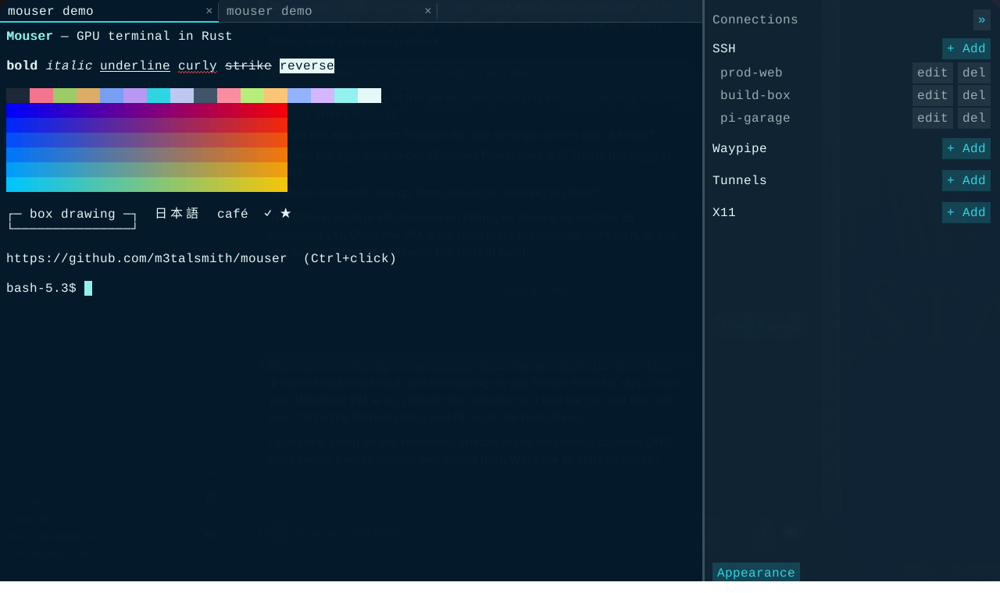

mouser
A fast GPU terminal emulator, written in Rust.
Mouser runs your login shell in a PTY, parses VT/xterm escape sequences and renders the grid on the GPU. A file commander, a media player and an optional AI chat dock above your prompt. Linux first; macOS and Windows builds too.
Version 1.0.0 · BSD-3-Clause

Features
GPU engines
Render engines are plugins:
mouser(wgpu), Skia, the CPU renderer, or your own via a C ABI. Switch live withmouser engine use.Crash-proof windows
On Linux and macOS the shells live in a session process; a GPU driver or engine crash restarts only the window, with your shells, scrollback and tabs intact.
Commander
A file manager docked above the prompt: list, grid and carousel views, image and text previews, and a video and audio player, local or over SSH.
Chat and MCP
An optional agent (
esc :a) that sees your screen and acts through tools, with an approval card for every command. Mouser is also an MCP server and client.Your models
OpenAI, Anthropic, Gemini, xAI, OpenRouter, Kimi or any compatible server, or an optional built-in local Gemma model. Keys stay in the OS keychain.
Tabs and connections
Each tab has its own PTY, screen, scrollback and title. A sidebar for SSH hosts from your ssh config, plus Waypipe, tunnels and X11.
Compressed scrollback
Chunked history compressed with Zstd or LZ4 when idle, keeping colours, and searchable across compressed chunks.
Fuzzball protocol
Mouser's own open graphics and keyboard protocol. Read the spec. Fallbacks: Kitty keyboard and Kitty graphics.
Modern xterm
Truecolour, curly and coloured underlines, wide characters, mouse, focus, bracketed paste, OSC 8 links and OSC 52.
Plugins
Modes, engines, model providers and MCP tools install as plugins with explicit permissions:
mouser plugin list.
Install
Homebrew (macOS)
# CLI
brew install --formula https://raw.githubusercontent.com/WeirdBrains/mouser/main/Formula/mouser.rb
# App
brew install --cask https://raw.githubusercontent.com/WeirdBrains/mouser/main/Casks/mouser.rbArch Linux
# Prebuilt release
sudo pacman -U https://github.com/WeirdBrains/mouser/releases/download/v1.0.0/mouser-bin-1.0.0-1-x86_64.pkg.tar.zst
# Or build main from source
git clone https://github.com/WeirdBrains/mouser
cd mouser/packaging/arch/mouser-git && makepkg -siFrom source with cargo
git clone https://github.com/WeirdBrains/mouser
cd mouser
cargo run -p mouser-app --releaseGitHub Releases
Each release ships:
- Linux:
.deb,.rpm, Archmouser-bin - macOS:
Mouser.app.dmg - Windows: portable
.zipand installer.exe
Optional terminfo entry: tic -x -o ~/.terminfo extra/mouser.terminfo
Quick start
Launch Mouser and your login shell starts in the first tab. Open the sidebar to add or pick an SSH host; clicking it opens ssh <alias> in a new tab.
| Keys | Action |
|---|---|
| Ctrl+Shift+T | New tab |
| Ctrl+Shift+W | Close tab |
| Ctrl+Tab / Ctrl+Shift+Tab | Next / previous tab |
| Alt+1…9 | Jump to tab |
| Ctrl+Shift+V | Paste (bracketed when the app asks) |
| Ctrl+click | Open an OSC 8 link |
| Shift+mouse | Bypass mouse reporting when an app grabbed the mouse |
| Mouse wheel | Scrollback |